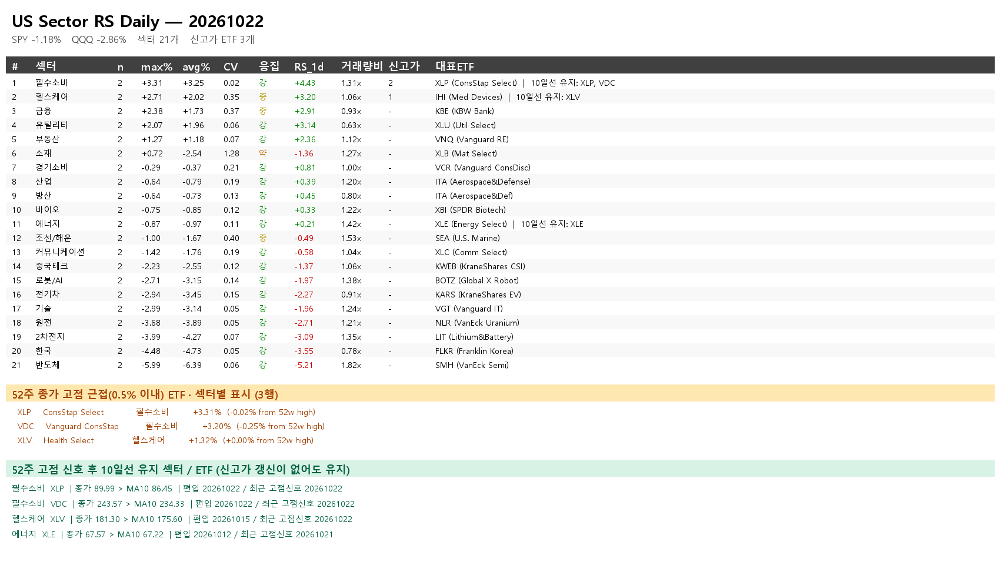

뉴스 보고서# 10월 23일 아침 · 미국 섹터·날짜순 일정
뉴스 보고서: 원문 열기
미검토 일정 후보 2,291건은 미검토 상태로 보존합니다. 확인된 일정만 아래에 싣고 나머지 검증 완료를 뜻하지 않으며, 사용자 요청에 따라 발송을 진행합니다.
## 미국 섹터 · 10월 22일 완료 세션
지정 미국 섹터 스크립트만 실행했습니다. 최초 종료코드 0이었으나 43개 중 12개만 통과해 사용을 중단했습니다. FDR가 제공한 31개 ETF의 10월 21일 결측 행이 기존 정상 같은 날짜 종가를 덮은 것이 원인이었습니다. 원 행을 감사 파일에 보존하고 동일 날짜의 검증 캐시만 복구한 뒤 재실행했습니다. 최종 종료코드 0, 43/43 확보·누락 0·종목 내 날짜 중복 0입니다. 전일 검증 JSON의 종가와 복구 31개 값을 모두 대조했습니다.
FinanceDataReader 및 로컬 같은 날짜 캐시 원천이며 거래소 공식 종가 독립 확인은 아닙니다. 수익률·평균 등락률·SPY 상대강도·5일 흐름·MA10을 가격 캐시로 재계산했습니다. 42개 섹터 소속은 ETF 41개이고 ITA가 산업·방산에 겹칩니다. SPY·QQQ를 포함한 수집 티커는 43개입니다. SPY 수익률 -1.18%입니다. 과거 섹터 집계표 중복 147행은 보존하되 이번 분석에 쓰지 않았고 5일 흐름은 중복 없는 ETF 가격으로 계산했습니다.
아래 순서는 1일 단순평균 내림차순입니다. 5일 값은 각 ETF의 5거래일 수익률 평균이며 5일 일별 평균 합계가 아닙니다. SPY 대비 값은 %p입니다.
필수소비 · ETF 2개 · 평균 +3.25% · SPY 대비 +4.43%p · 5일 평균 +3.75%
헬스케어 · ETF 2개 · 평균 +2.02% · SPY 대비 +3.20%p · 5일 평균 +1.96%
유틸리티 · ETF 2개 · 평균 +1.96% · SPY 대비 +3.14%p · 5일 평균 +2.87%
금융 · ETF 2개 · 평균 +1.73% · SPY 대비 +2.91%p · 5일 평균 +3.04%
부동산 · ETF 2개 · 평균 +1.18% · SPY 대비 +2.36%p · 5일 평균 +1.29%
경기소비 · ETF 2개 · 평균 -0.37% · SPY 대비 +0.81%p · 5일 평균 +1.30%
방산 · ETF 2개 · 평균 -0.73% · SPY 대비 +0.45%p · 5일 평균 -0.85%
산업 · ETF 2개 · 평균 -0.79% · SPY 대비 +0.39%p · 5일 평균 -0.94%
바이오 · ETF 2개 · 평균 -0.85% · SPY 대비 +0.33%p · 5일 평균 +1.13%
에너지 · ETF 2개 · 평균 -0.97% · SPY 대비 +0.21%p · 5일 평균 +1.27%
조선/해운 · ETF 2개 · 평균 -1.67% · SPY 대비 -0.49%p · 5일 평균 -1.99%
커뮤니케이션 · ETF 2개 · 평균 -1.76% · SPY 대비 -0.58%p · 5일 평균 -4.69%
소재 · ETF 2개 · 평균 -2.54% · SPY 대비 -1.36%p · 5일 평균 -1.95%
중국테크 · ETF 2개 · 평균 -2.55% · SPY 대비 -1.37%p · 5일 평균 -5.29%
기술 · ETF 2개 · 평균 -3.14% · SPY 대비 -1.96%p · 5일 평균 -3.34%
로봇/AI · ETF 2개 · 평균 -3.15% · SPY 대비 -1.97%p · 5일 평균 -3.30%
전기차 · ETF 2개 · 평균 -3.45% · SPY 대비 -2.27%p · 5일 평균 -5.20%
원전 · ETF 2개 · 평균 -3.89% · SPY 대비 -2.71%p · 5일 평균 -5.72%
2차전지 · ETF 2개 · 평균 -4.27% · SPY 대비 -3.09%p · 5일 평균 -7.29%
한국 · ETF 2개 · 평균 -4.73% · SPY 대비 -3.55%p · 5일 평균 -4.38%
반도체 · ETF 2개 · 평균 -6.39% · SPY 대비 -5.21%p · 5일 평균 -6.97%
## 52주 고점 신호 후 10일선 유지
252거래일 종가 최고치의 0.5% 이내라는 신호 뒤 종가>SMA10을 연속 유지한 ETF입니다. 실제 장중 52주 고가 돌파와 다릅니다. 진행 중 봉이나 검증하지 않은 돌파 확률을 쓰지 않습니다.
필수소비 XLP · 종가 89.99 / MA10 86.45 · 신호 20261022 · 5일 +3.82%
필수소비 VDC · 종가 243.57 / MA10 234.33 · 신호 20261022 · 5일 +3.68%
헬스케어 XLV · 종가 181.30 / MA10 175.60 · 신호 20261015 · 5일 +2.32%
에너지 XLE · 종가 67.57 / MA10 67.22 · 신호 20261012 · 5일 +1.52%
## 주요 거시 일정
새 확정 거시 일정은 공식 원표 대조가 남아 있습니다. 아래 11월 3일 에볼라 절차는 내부 문건 인용 보도 계획으로 공식 확정과 구분합니다.
2026-11-03(미국 현지) · 국제선 입국자 최근 21일 민주콩고 방문·체류 없음 문서 요구 계획 보도. CDC 공개 확정 고시 미확보이며 접종증·음성 검사서 의미가 아닙니다.
원문: 원문 열기
## 날짜순 확인 일정 · 기업 행동 / IR 감사
이전판 확인 항목을 이월했습니다. 당일 이전 항목은 경과 일정이며 행사가 실제 개최됐거나 행동이 완료됐다는 증거가 아닙니다. IR·재공시·계약 종료는 주요 거시 일정과 분리합니다.
### 2026-10-22 · 이전판 확인 이월 · 경과·당일
LS ELECTRIC IR 10월 22일 09:00 예정
원문: http://dart.fss.or.kr/dsaf001/main.do?rcpNo=20261021800162
### 2026-10-22 · 기업 행동·계약 감사 · 경과·당일
대덕전자 6,150억원 설비투자 기간 2026-10-22~2030-12-31; 시작일은 이사회 결의일.
원문: 원문 열기
### 2026-10-22 · 이전판 확인 이월 · 경과·당일
유니드 IR 10월 22일 09:00 예정
원문: http://dart.fss.or.kr/dsaf001/main.do?rcpNo=20261021800239
### 2026-10-22 · 이전판 확인 이월 · 경과·당일
휴메딕스 IR 10월 22~23일 09:00~17:00 예정
원문: http://dart.fss.or.kr/dsaf001/main.do?rcpNo=20261021900363
### 2026-10-23 · IR·기업 설명회 감사 · 경과·당일
IPARK현대산업개발 IR 예정 2026-10-23 10:30 (공시 국내 시각 표기). 자료 게재일과 행사일은 구분하며 변경될 수 있습니다.
원문: 원문 열기
### 2026-10-23 · 기업 행동·계약 감사 · 경과·당일
삼성E&A 자기주식 취득 예정기간 2026-10-23~2027-01-22. 소각 예정일은 미정이며 취득 종료일과 같다고 볼 수 없습니다.
원문: 원문 열기
### 2026-10-26 · 이전판 확인 이월 · 예정
10월 26일부터 범한퓨얼셀·듀켐바이오의 NXT 거래 제외 예정입니다. KRX 정규장 거래정지가 아닙니다.
원문: 원문 열기
### 2026-10-26 · IR·기업 설명회 감사 · 예정
HD현대마린솔루션 IR 예정 2026-10-26 13:30 (공시 국내 시각 표기). 자료 게재일과 행사일은 구분하며 변경될 수 있습니다.
원문: 원문 열기
### 2026-10-27 · IR·기업 설명회 감사 · 예정
iM금융지주 IR 예정 2026-10-27 16:00 (공시 국내 시각 표기). 자료 게재일과 행사일은 구분하며 변경될 수 있습니다.
원문: 원문 열기
### 2026-10-27 · IR·기업 설명회 감사 · 예정
동아에스티 IR 예정 2026-10-27 14:00 (공시 국내 시각 표기). 자료 게재일과 행사일은 구분하며 변경될 수 있습니다.
원문: 원문 열기
### 2026-10-27 · IR·기업 설명회 감사 · 예정
동아제약 IR 예정 2026-10-27 14:00 (공시 국내 시각 표기). 자료 게재일과 행사일은 구분하며 변경될 수 있습니다.
원문: 원문 열기
### 2026-10-27 · 이전판 확인 이월 · 예정
삼성카드는 10월 27일 10:00에 2026년 3분기 실적 컨퍼런스콜과 Q&A를 개최하고 같은 날 IR 자료를 게시할 예정입니다.
원문: http://dart.fss.or.kr/dsaf001/main.do?rcpNo=20261020800355
### 2026-10-27 · 이전판 확인 이월 · 예정
삼성카드는 10월 27일 10:00에 2026년 3분기 실적 컨퍼런스콜과 Q&A를 개최하고 같은 날 IR 자료를 게시할 예정입니다.
원문: http://dart.fss.or.kr/dsaf001/main.do?rcpNo=20261020800355
### 2026-10-28 · 이전판 확인 이월 · 예정
HD한국조선해양 IR 10월 28일 14:00 예정
원문: http://dart.fss.or.kr/dsaf001/main.do?rcpNo=20261021800394
### 2026-10-28 · 이전판 확인 이월 · 예정
HD현대 IR 10월 28일 16:00 예정
원문: http://dart.fss.or.kr/dsaf001/main.do?rcpNo=20261021800480
### 2026-10-28 · 이전판 확인 이월 · 예정
HD현대중공업 IR 10월 28일 14:00 예정
원문: http://dart.fss.or.kr/dsaf001/main.do?rcpNo=20261021800389
### 2026-10-28 · 이전판 확인 이월 · 예정
두산퓨얼셀 IR 10월 28일 16:30 예정
원문: http://dart.fss.or.kr/dsaf001/main.do?rcpNo=20261021800122
### 2026-10-29 · 기업 행동·계약 감사 · 예정
LG이노텍 기취득 보통주 2,600주 소각 예정 2026-10-29.
원문: 원문 열기
### 2026-10-29 · 이전판 확인 이월 · 예정
SKC는 10월 28일 IR 자료를 게시하고 10월 29일 09:00부터 30일까지 서울 여의도 등에서 기관투자자 대면 미팅을 예정하고 있습니다. 회사 사정으로 일정이 달라질 수 있습니다.
원문: http://dart.fss.or.kr/dsaf001/main.do?rcpNo=20261020800480
### 2026-10-29 · 이전판 확인 이월 · 예정
SKC는 10월 28일 IR 자료를 게시하고 10월 29일 09:00부터 30일까지 서울 여의도 등에서 기관투자자 대면 미팅을 예정하고 있습니다. 회사 사정으로 일정이 달라질 수 있습니다.
원문: http://dart.fss.or.kr/dsaf001/main.do?rcpNo=20261020800480
### 2026-10-29 · IR·기업 설명회 감사 · 예정
iM금융지주 IR 예정 2026-10-29 17:30 (공시 국내 시각 표기). 자료 게재일과 행사일은 구분하며 변경될 수 있습니다.
원문: 원문 열기
### 2026-10-29 · IR·기업 설명회 감사 · 예정
두산에너빌리티 IR 예정 2026-10-29 15:45 (공시 국내 시각 표기). 자료 게재일과 행사일은 구분하며 변경될 수 있습니다.
원문: 원문 열기
### 2026-10-29 · IR·기업 설명회 감사 · 예정
보령 IR 예정 2026-10-29 09:00 (공시 국내 시각 표기). 자료 게재일과 행사일은 구분하며 변경될 수 있습니다. 공시 기타사항에 10월 29~30일 일정이 함께 기재돼 있습니다.
원문: 원문 열기
### 2026-10-29 · 기업 행동·계약 감사 · 예정
한신공영 보통주 706주·종류주 365주 소각 예정 2026-10-29.
원문: 원문 열기
### 2026-10-29 · IR·기업 설명회 감사 · 예정
현대자동차 IR 예정 2026-10-29 14:10 (공시 국내 시각 표기). 자료 게재일과 행사일은 구분하며 변경될 수 있습니다. 자료 게재 14:00, 컨퍼런스콜 14:10입니다.
원문: 원문 열기
### 2026-10-30 · 기업 행동·계약 감사 · 예정
교보증권 약 1,000억원 상환전환우선주 증자 납입 예정 2026-10-30.
원문: 원문 열기
### 2026-10-30 · 기업 행동·계약 감사 · 예정
교보증권 약 2,000억원 상환전환우선주 증자 납입 예정 2026-10-30. 별도 공시 건.
원문: 원문 열기
### 2026-10-30 · 기업 행동·계약 감사 · 예정
시큐레터 제3자배정 유상증자 납입 예정 2026-10-30.
원문: 원문 열기
### 2026-10-30 · 기업 행동·계약 감사 · 예정
엑스페릭스 제3자배정 유상증자 납입 예정 2026-10-30; 신주 상장 예정 2026-11-19.
원문: 원문 열기
### 2026-10-30 · 이전판 확인 이월 · 예정
엠씨넥스 주식 소각 10월 30일 예정
원문: http://dart.fss.or.kr/dsaf001/main.do?rcpNo=20261021800106
### 2026-10-30 · IR·기업 설명회 감사 · 예정
현대글로비스 IR 예정 2026-10-30 11:00 (공시 국내 시각 표기). 자료 게재일과 행사일은 구분하며 변경될 수 있습니다.
원문: 원문 열기
### 2026-11-02 · 이전판 확인 이월 · 예정
포스코DX IR 11월 2일 13:30 예정
원문: http://dart.fss.or.kr/dsaf001/main.do?rcpNo=20261021800235
### 2026-11-02 · 이전판 확인 이월 · 예정
포스코퓨처엠 IR 11월 2일 11:00 예정
원문: http://dart.fss.or.kr/dsaf001/main.do?rcpNo=20261021800131
### 2026-11-02 · IR·기업 설명회 감사 · 예정
현대글로비스 IR 예정 2026-11-02 09:10 (공시 국내 시각 표기). 자료 게재일과 행사일은 구분하며 변경될 수 있습니다. NDR의 첫 일시이며 실적발표회와 다른 행사입니다.
원문: 원문 열기
### 2026-11-03 · 이전판 확인 이월 · 예정
HRS 배당 지급 11월 3일 예정 · 배당 기준일은 9월 30일
원문: http://dart.fss.or.kr/dsaf001/main.do?rcpNo=20261021900361
### 2026-11-04 · 이전판 확인 이월 · 예정
넥센타이어 IR 11월 4일 15:30 예정
원문: http://dart.fss.or.kr/dsaf001/main.do?rcpNo=20261021800300
### 2026-11-05 · IR·기업 설명회 감사 · 예정
KG모빌리티플랫폼 IR 예정 2026-11-05 16:00 (공시 국내 시각 표기). 자료 게재일과 행사일은 구분하며 변경될 수 있습니다.
원문: 원문 열기
### 2026-11-05 · IR·기업 설명회 감사 · 예정
롯데에너지머티리얼즈 IR 예정 2026-11-05 10:00 (공시 국내 시각 표기). 자료 게재일과 행사일은 구분하며 변경될 수 있습니다.
원문: 원문 열기
### 2026-11-06 · IR·기업 설명회 감사 · 예정
한국타이어앤테크놀로지 IR 예정 2026-11-06 15:00 (공시 국내 시각 표기). 자료 게재일과 행사일은 구분하며 변경될 수 있습니다.
원문: 원문 열기
### 2026-11-09 · 기업 행동·계약 감사 · 예정
비비안 익산 토지·건물 양수 기준일·등기 예정 2026-11-09. 계약체결일은 10월 22일.
원문: 원문 열기
### 2026-11-11 · IR·기업 설명회 감사 · 예정
메리츠금융지주 IR 예정 2026-11-11 16:00 (공시 국내 시각 표기). 자료 게재일과 행사일은 구분하며 변경될 수 있습니다.
원문: 원문 열기
### 2026-11-13 · 기업 행동·계약 감사 · 예정
에이팩트 제3자배정 유상증자 납입 예정 2026-11-13; 신주 상장 예정 2026-12-04.
원문: 원문 열기
### 2026-11-16 · 기업 행동·계약 감사 · 예정
무학 분기배당 주당 160원, 지급 예정은 2026-11-16 이내(특정일 아님). 배당 기준일은 2026-09-30으로 이미 경과.
원문: 원문 열기
### 2026-11-20 · 이전판 확인 이월 · 예정
삼성에피스 브라질 공급 관련 재공시 11월 20일 예정 · 납품일 아님
원문: http://dart.fss.or.kr/dsaf001/main.do?rcpNo=20261021800142
### 2026-11-20 · 이전판 확인 이월 · 예정
포스코 HBI 투자 검토 재공시 11월 20일 예정 · 투자 개시일 아님
원문: http://dart.fss.or.kr/dsaf001/main.do?rcpNo=20261021800102
### 2026-11-21 · 이전판 확인 이월 · 예정
푸드나무 인수 검토 재공시 11월 21일 예정 · 인수 완료일 아님
원문: http://dart.fss.or.kr/dsaf001/main.do?rcpNo=20261021900648
### 2026-11-23 · 이전판 확인 이월 · 예정
제이알글로벌리츠는 11월 23일 서울 교원 종각빌딩에서 제3-1회 10~11시, 제3-2회 13~14시, 제4회 15~16시, 제6회 17~18시 사채권자집회를 순차 개최할 예정입니다. 채무조정 안건 상정이며 가결이나 법원 인가 완료가 아닙니다.
원문: http://dart.fss.or.kr/dsaf001/main.do?rcpNo=20261020800752
### 2027-01-19 · 이전판 확인 이월 · 예정
코람코라이프인프라리츠는 안양물류센터 매입을 검토 중이며 확정된 사항은 없다고 밝혔습니다. 결정 시 또는 3개월 이내 재공시 예정이며 2027년 1월 19일은 재공시 예정일로 자산 취득일이 아닙니다.
원문: http://dart.fss.or.kr/dsaf001/main.do?rcpNo=20261020800340
### 2027-01-22 · 기업 행동·계약 감사 · 예정
삼성E&A 소각용 자기주식 취득 종료 예정 2027-01-22. 실제 소각일 미정.
원문: 원문 열기
### 2027-04-16 · 기업 행동·계약 감사 · 예정
팬오션 Vale 철광석 운송 시작 예정 2027-04-16, 종료 예정 2032-04-16; 최초 NOR 제출부터 5년이므로 변경 가능.
원문: 원문 열기
### 2027-04-22 · 기업 행동·계약 감사 · 예정
인화정공 50억원 자기주식 신탁 종료 예정 2027-04-22; 시작은 2026-10-22.
원문: 원문 열기
### 2029-10-22 · 기업 행동·계약 감사 · 예정
HD현대마린엔진 중국 조선소 엔진 공급계약 기간 2026-10-21~2029-10-22. 선박 건조 일정에 따라 변경 가능.
원문: 원문 열기
## 새 날짜·기간 표현 · 확정일 아님
2026-10-23 · 뉴인텍·형지글로벌·바른손이앤에이 거래정지 보도. 종료·재개일은 미정이고 나머지 전파 종목은 개별 거래소 원문 대조 대기.
원문: 원문 열기 | 원문 열기 | 원문 열기
2027년 말 세종 기판 공장 완공, 2028년 상반기 장비·시운전, 하반기 양산, 2029~2033년 테슬라 공급은 업계 보도 계획입니다. 하루의 확정 날짜로 바꾸지 않습니다.
원문: 원문 열기
2027년 에스디바이오센서 FDA 등록 추진·2028년 WHO PQ 획득 목표·2027년 및 2029년 재무 목표는 승인·달성 확정일이 아닙니다. 2026~2028년 환원 정책과 단일 소각 예정일을 구분합니다.
원문: 원문 열기
모더나 상세 결과의 10월 24일 마드리드 학회 발표 계획은 보도 일정이며 회사·학회 원표 대조가 남아 있습니다. 대만 휴장·프랑스 시위·중국 회의 후보도 미검토 목록에 보존했습니다.
